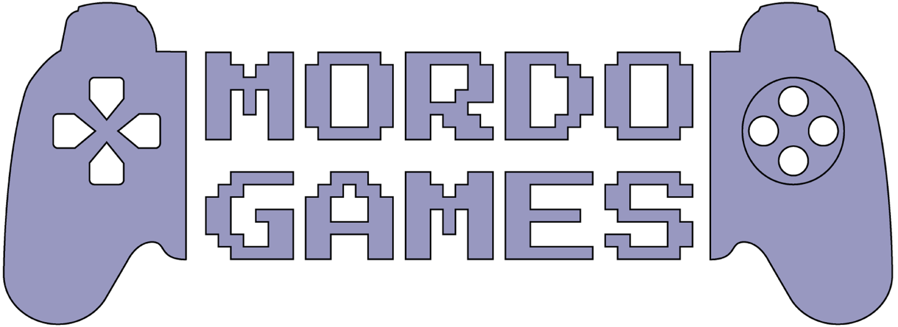
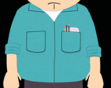

Relevamiento
Captura de pantalla
Paleta de colores
Tipografía
Paleta de colores
Paleta de colores aplicados en el isologotipo
Este color lo utilizo por su semejanza al color de la camisa que utiliza generalmente Randy

#66CCCC
Paleta de colores aplicados en el sitio web: blanco, rojo y plata